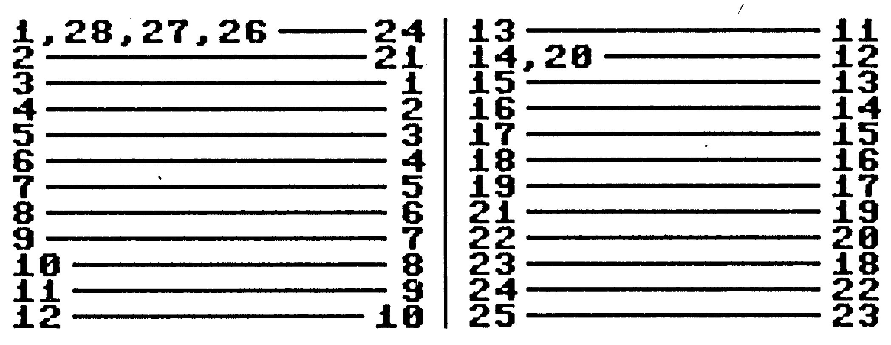
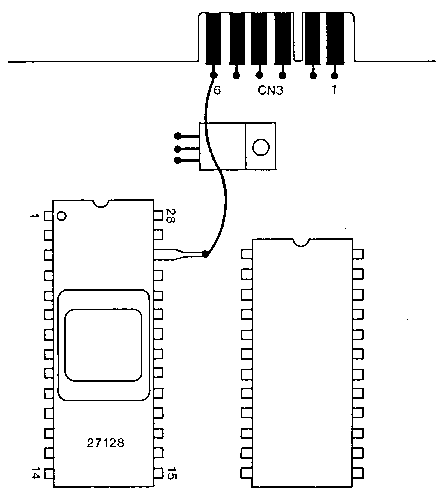
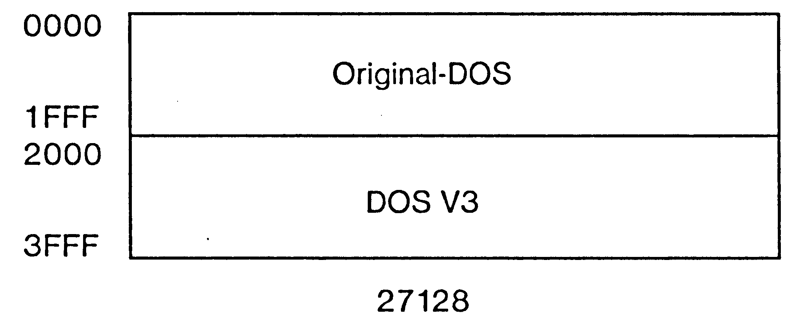
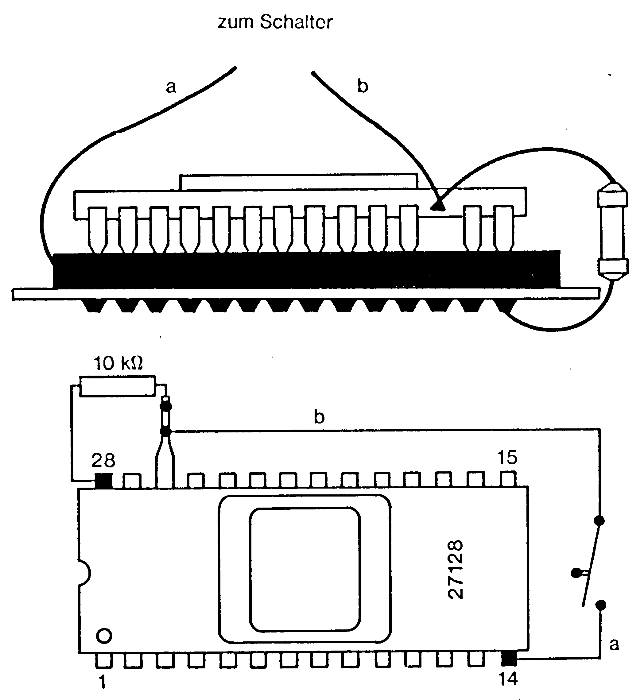

64'er-DOS erweitert
Auch Gutes läßt sich noch verbessern. Das neue 64'er-DOS Version 4 (EX-SMON-DOS) enthält zusätzlich einen komfortablen Monitor, Basic-Toolkit-Befehle und eine Bildschirm-Hardcopy.
Schon wieder ein neues Kernel? werden viele jetzt fragen, und tatsächlich: Wer geglaubt hatte, das »64'er-DOS V3« sei wohl der letzte Schritt des (sinnvollen) Betriebssystemausbaus für den C 64, wird überrascht sein: Das neue System beinhaltet nicht nur das komplette 64'er DOS V3, sondern eine zusätzliche Fülle von Programmierhilfen, wie sie zum Teil auch in größeren Computern vergeblich gesucht werden.
Sie werden in Kürze feststellen, daß Sie für das bißchen Geld und wenig Aufwand einen neuen, wirklich besseren Computer bekommen haben. Erst beim späteren Umschalten auf das Originalsystem merkt man richtig, daß dieses viel eher dazu angetan ist, einem das Computern zu verleiden, anstatt Freude zu bereiten.
Noch eine kurze Meldung: Nach Redaktionsschluß erreichte uns noch eine Erweiterung zum DOS V4: Es enthält nun auch als Ersatz der RS232-Schnittstelle eine komfortable Centronics-Schnittstelle, die am User-Port nach außen führt. Es war uns leider aus Zeitgründen nicht mehr möglich, das neue Listing und die erreichte Anleitung abzudrucken. Die als »CENT-SMON-Kernel« bezeichnete Datei sowie die Anleitung zur Centronics-Schnittstelle sind jedoch auf der zu dieser Ausgabe erscheinenden Programmservice-Diskette enthalten. Bis auf die geänderte Software, die zum Brennen des Kernels benötigt wird, ändert sich jedoch nichts an der nun folgenden Beschreibung des neuen Betriebssystems.
Das vorliegende, erweiterte »EX-SMON-DOS« ist für diejenigen gedacht, die mit ihrem Computer nicht nur spielen, sondern auch selbst programmieren. Alle hier nicht erwähnten Funktionen des 64'er-Kernel V3 (außer »SYS 4096*«) sind vollständig vorhanden und funktionieren gemäß dessen Beschreibung in Ausgabe 3/86.
EX-SMON-DOS ist zum 64'er-DOS V3 vollständig kompatibel und benötigt – wie jenes – den Einbau je eines neuen EPROMs im Computer und in der Floppy. Dazu ist bei diesem System eine Lötstelle erforderlich, die aber auch der Laie mit etwas Sorgfalt problem- und vor allem gefahrlos machen kann. Eventuell vorhandene Sockel oder Umschaltplatinen können weiter verwendet werden.
Weiter unten wird der Einbau noch genauer beschrieben, vorher aber wollen wir doch sehen, was das EX-SMON-DOS alles kann:
Die neue Belegung der Funktionstasten
Die Funktionstasten wurden gegenüber dem 64'er-Kernel V3 etwas anders belegt, um die Bedienung so angenehm wie möglich zu machen. Sie erfüllen nun folgende Aufgaben:
<F1> gibt das Directory auf dem Bildschirm ohne Programmverlust aus
<F2> LOAD
<F3> Bildschirm löschen und RUN.
<F4> MERGE – mit dieser Befehlstaste ist es möglich, ein zweites Basic-Programm an ein schon im Speicher vorhandenes anzuhängen. Dabei kann das zweite Programm auch niedrigere Zeilennummern haben – nur bei gleichen Sprungzielen gibt's bei späterem RENUMBER Probleme, da RENUMBER das jeweils erste Ziel als richtig erkennt.
Benutzt wird MERGE wie folgt: mit <F1> Directory auf den Bildschirm bringen, und dann mit dem Cursor auf die Zeile mit dem gewünschten Programmnamen fahren. Jetzt <F4> drücken, und schon wird das neue Programm einfach hinten an das vorhandene angehängt.
Achtung: Die LIST-Tasten <F5> und <F7> zeigen das zweite Programm nur, wenn dessen erste Zeilennummer höher ist als die letzte des alten! Es kann sonst nur mit dem normalen LIST-Befehl betrachtet werden.
<F5> PAGE-UP – diese Taste listet ab der obersten auf dem Bildschirm stehenden Zeilennummer eine Seite nach »oben« (rückwärts im Basic-Programm!). Wenn keine Nummer auf dem Schirm steht, so wird die erste »Programmseite« gezeigt.
<F6> schreibt »SAVE"« auf den Bildschirm.
<F7> PAGE-DOWN – listet ab der Cursor-Position beziehungsweise ab der untersten Zahl auf dem Bildschirm eine Seite nach »unten«. Statt also LIST 450 <RETURN> einzugeben, kann einfach 450 an den linken Bildrand geschrieben werden, dann wird <F7> betätigt: der Computer listet ab Zeile 450 bis Bildschirmende.
<F5> und <F7> führen zudem automatisch OLD durch (Wiederherstellen eines durch NEW oder RESET gelöschten Programms), wenn kein Programm gefunden wird.
<F8> schaltet um zwischen Floppy-Geräteadresse #8 oder #9.
<CTRL+F1> führt in den COMMAND-Modus (siehe unten).
<CTRL+CBM+F5> diese Fingerakrobatik-Tastenkombination hat ihren Grund: Sie führt einen RESET durch, was ja nicht versehentlich geschehen soll. Außerdem ist sie (im Gegensatz zu den anderen Funktionen) auch bei vielen laufenden Programmen in Betrieb. Diese Tastenkombination wird von keinem uns bekannten Programm benutzt.
<CTRL+CBM+F7> PRINT-SCREEN – auch diese Funktion ist aus dem laufenden Programm abrufbar: Sie gibt jederzeit eine Hardcopy des aktuellen Text-Bildschirms auf den Drucker! Das Programm macht dabei einfach keine Pause und läuft nach erfolgtem Druck unbeirrt weiter!
Der Drucker muß am seriellen Port mit Device #4 vorhanden sein. Um auch Commodore-fremde Drucker (mit Interface) bedienen zu können, wird auf die Ausgabe des Reverszeichens verzichtet. Zwischen Groß-/Kleinschreibung und Normalgrafik wird mit Sekundäradresse 7 beziehungsweise 0 umgeschaltet (dem Bildschirm entsprechend).
Bevor diese Routine anläuft, werden etliche Sicherheitsabfragen gemacht, da nur der Original-Commodore-Zeichensatz ausgegeben wird.
PRINT-SCREEN funktioniert mit praktisch allen Basic- und vielen Maschinenprogrammen. Es kann jedoch Programme geben, die bei Betätigung von <CTRL+CBM+F7> hoffnungslos abstürzen!
Der COMMAND-Modus stellt eine ganze Reihe nützlicher Editor-Routinen zur Verfügung. Nach Druck von <CTRL+F1> fragt der Computer:
COMMAND ?und der Cursor blinkt zum Zeichen, daß eine Eingabe erwartet wird. Er reagiert (ohne <RETURN>) auf folgende Tasten:
<A> AUTO-NUMBER – zur leichteren Eingabe eines Basic-Programmes gibt der Computer nach jedem <RETURN> die nächste Zeilennummer aus. Es können Schrittweiten von 1 bis 255 angegeben werden. Begonnen wird ab der Nummer der nächsten eingegebenen Zeile. Korrekturen an vorhandenen Zeilen können trotz eingeschaltetem AUTO-NUMBER vorgenommen werden (kein »Zeilenkiller« wie andere...). AUTO-NUMBER läßt sich ausschalten, indem man eine Zeilennummer leer (also ohne weiteren Text) mit <RETURN> eingibt (diese Zeile wird, sofern im Programm vorhanden, wie üblich gelöscht).
<D> DELETE – damit können beliebig lange Programmteile gelöscht werden. Delete fragt nach der ersten (»FROM«) und der letzten (»TO«) Zeilennummer des Programmbereiches, der gelöscht werden soll. Achtung: Mit DELETE gelöschte Zeilen können (außer durch Neueingabe) nicht wiederhergestellt werden! Bei Fehleingaben kann durch Eingabe von 0 bei »TO« ausgestiegen werden.
<F> FIND – dieses Kommando findet eine beliebige Zeichenfolge in einem Basic-Programm und gibt die entsprechende Zeilennummer aus (oder mehrere, falls sich die Zeichenfolge öfters im Programm findet). Bei der Eingabe der zu suchenden Zeichen muß folgendes beachtet werden: Text, der hinter REM oder in Anführungszeichen steht, wird vom C 64 anders behandelt als das übrige Programm. Bei der Suche nach solchen Zeichenfolgen muß als erstes Zeichen ein Anführungszeichen stehen.
<M> MOVE – eine Funktion, die man aus keiner Basic-Erweiterung, sondern nur aus Textverarbeitungsprogrammen kennt: Mit MOVE können ganze Programmblöcke an eine andere Stelle verschoben werden! Wie oft kommt es vor, daß man während des Programmierens eine Routine zum Beispiel ab Zeile 2000 bis 2400 eingegeben hat, sie später aber lieber zwischen Zeile 400 und 410 hätte, weil dadurch der Programmfluß besser ersichtlich wäre! Kein Problem mit MOVE:
Zuerst wird die erste Zeile des zu verschiebenden Blocks (»FROM«, also hier 2000) angegeben.
Die zweite Eingabe bezeichnet das Ende des zu verschiebenden Programmblocks (»TO«): im Beispiel also 2400.
Nun sagen wir dem Computer noch, wohin der Block verschoben werden soll (»WHERE«). Dabei geben wir die letzte Zeilennummer an, die ihren alten Platz behalten soll, also im Beispiel Zeile 400.
Der Block wird nun verschoben, und das Programm fährt gleich weiter mit RENUMBER (siehe unten), weil ja jetzt nach Zeile 400 die Zeilen 2000 bis 2400 und erst darauf Zeile 410 folgen.
Damit das Basic-Programm lauffähig bleibt, wird (wie auch bei RENUMBER) vor der Ausführung von MOVE geprüft, ob alle Sprungziele (für GOTO und GOSUB) vorhanden sind, ansonsten werden die fehlerhaften Zeilen angezeigt und die Operation abgebrochen.
MOVE benutzt als Zwischenspeicher das (von Basic nicht genutzte) RAM unter dem Kernel-ROM.
<O> OFF – schaltet sämtliche Befehlserweiterungen und Funktionen des neuen Systems ab. Die Funktionen RESET und PRINT-SCREEN bleiben erhalten.
<R> RENUMBER – numeriert ein Basic-Programm neu mit gleichmäßiger Schrittweite zwischen 1 und 255. Auch die Startnummer kann eingegeben werden.
Alle Sprungziele im Programm, auch von Befehlen wie GOSUB, RUN oder ON GOTO, werden angepaßt, so daß das Programm lauffähig bleibt. RENUMBER funktioniert auch dann, wenn nach einer hohen Zeilennummer eine niedrigere folgt (zum Beispiel nach MERGE oder MOVE). Die Funktion wird nicht ausgeführt, wenn sich Sprünge zu nicht existierenden Zeilennummern im Programm befinden.
RENUMBER kann, je nach Programmlänge, einige Minuten dauern. Dabei wird jeweils die gerade bearbeitete (alte) Zeilennummer angezeigt.
<V> VARIABLEN-DUMP – zeigt alle aktuellen Variablen und deren Wert nach einem Programmablauf an (keine Arrays!).
Um zu verhindern, daß die Angaben am oberen Bildrand verschwinden, kann <V> auch geSHIFTet eingegeben werden (das EX-SMON-Kernel stoppt das LISTen am Bildschirmende bei gedrückter SHIFT-Taste).
Achtung: Wie nach allen COMMAND-Befehlen kann das Programm danach nicht mit CONT fortgesetzt werden!
<X> EXIT – verlassen des COMMAND-Modus ohne weiteres Kommando.
Andere Eingaben als die oben aufgeführten Tasten bei »COMMAND ?« werden mit einem UNDEF'D STATEMENT ERROR quittiert.
Soviel zu den erweiterten Editor-Funktionen – wer damit erst einmal gearbeitet hat, der gibt EX-SMON-DOS nie wieder her!
Noch eine Kleinigkeit: Nach dem Laden von Maschinenprogrammen hinter das Basic-Ende mußte bisher immer NEW eingegeben werden – lästig, wenn noch ein Basic-Programm im Speicher war. Auch diese Zeiten sind vorbei, in diesen Fällen bleiben die Basic-Zeiger so, wie sie vor dem Laden waren!
Kommen wir jetzt zum zweiten Teil der EX-SMON-DOS-Erweiterungen, der mehr die Maschinensprache-Freaks interessieren wird:
Der Monitor
Der Monitor, der hier eingebaut wurde, entspricht in den wichtigsten Zügen dem aus unseren Ausgaben bekannten SMON. Vollständig geändert wurde in der Hauptsache die Belegung der unteren drei Speicherseiten – der neue SMON benutzt nun ausschließlich den Prozessorstack und die Zeropageadressen $39 bis $48 (abgesehen natürlich von den Kernel-Ein- und -Ausgabefunktionen). Diese Speicherstellen werden – im Gegensatz zu den Kassettenadressen – selten von Maschinenprogrammen benutzt, was gerade der TRACE-Funktion (siehe unten) sehr dienlich ist. Da CONT beim Monitorausgang ohnehin gesperrt ist, spielt die Verstellung der Basic-Zeiger keine Rolle.
Aus Platzgründen entfernt wurden die Routinen »B« (Basic-Data), »K« (Kontrolle) und »=« (Vergleichen). Dafür sind drei wichtige Finessen hinzugekommen:
Der Monitor wird direkt aus dem Basic-Editor angesprochen. Das einzige, was zur Ausführung eines Monitorbefehls nötig ist, ist die Eingabe eines Punktes (».«) als erstes Befehlszeichen. So können zum Beispiel direkt aus dem Basic (wie alle Funktionen nur im Direktmodus) Hex-Zahlen umgerechnet oder Hex-Berechnungen ausgeführt werden. Die Syntax entspricht dabei genau der des SMON (siehe SMON-Anleitungen in den 64'er-Ausgaben 11/84 bis 2/85 oder auch komplett im Assembler-Sonderheft 8/85). So ergibt die Eingabe von ».$0079« <RETURN> die Umrechnung von Hex $79 in den entsprechenden Dezimalwert, ».#49152« <RETURN> hat eine Umrechnung in die Hex-Zahl zur Folge. ».GC000« <RETURN> startet ein Maschinenprogramm ab der Adresse 49152 – dabei entspricht diese Eingabe exakt dem vergleichbaren SYS-Befehl (Register werden NICHT aus der SMON-Registeranzeige, sondern aus $030C bis $030F übernommen!). So ist also endlich auch der Aufruf von Maschinenprogrammen mit Hex-Eingabe möglich!
Ebenfalls neu ist, daß der Kernel-SMON auf ALLE jetzt im C 64 vorhandenen Speicherbereiche zugreifen kann. Die Eingabe von ».R« führt – wie beim SMON – zur Registeranzeige. Dabei wird der routinierte SMON-Benutzer sofort feststellen, daß ein »Register« dazugekommen ist: es ist bezeichnet mit dem Kürzel »CP«. Dieses »Register« zeigt nichts anderes als die momentane Prozessorport-Einstellung, im Normalfall $37. Durch Überschreiben dieses Registers wird nun die gewünschte (nur für den Monitor gültige) Konfiguration eingestellt. Folgende Werte sind für dieses Register sinnvoll:
— $ 37 Die beim Einschalten des C 64 vorliegende, normale Speicherkonfiguration (beide ROMs aktiv)
— $ 36 zeigt normales Kernel ab $E000, jedoch RAM ab $A000 (Basic abgeschaltet)
— $ 35 Kernel und Basic abgeschaltet, die I/O-Register werden jedoch angezeigt
— $ 34 zeigt den vollen RAM-Bereich des C 64, also alle Bereiche unter den ROMs und auch unter den I/O-Registern
— $ 33 zeigt den Zeichensatz von $D000 bis $DFFF
— $ 27 zeigt den neuen (»linken«) Kernel-Bereich zwischen $E000 und $FFFF.
So ist es endlich möglich, sich einmal das riesige Speicherloch unter den ROMs auf dem Bildschirm anzusehen – man bekommt plötzlich eine ganz andere Beziehung dazu!
Die letzte – und wohl bemerkenswerteste – SMON-Erweiterung ist eine eigens für dieses System entwickelte Maschinensprache-TRACE-Routine, welche die schrittweise Verfolgung von fast allen Programmen ermöglicht. Auch dieser SMON-Teil arbeitet in allen ROM- und RAM-Bereichen – wenn ein Programm also während des TRACEns den Prozessorport umschalten will, so soll es das ruhig tun, TRACE wird dadurch nicht behindert! Dies wird erreicht durch die Einrichtung eines vollständig softwaregesteuerten Schein-Prozessors, welcher jeden Befehl vor der Ausführung analysiert und die nötigen Angaben auf den Bildschirm bringt. Der Prozessorsimulator führt alle legalen (und nur die!) Befehle des 6510 richtig aus. Er verwaltet einen eigenen Stack, so daß sich gewöhnlich kein Unterschied zur normalen Programmbearbeitung ergibt. Bei Erreichen eines illegalen Opcodes springt er jedoch zurück in die Registeranzeige des Monitors. Hier können übrigens nicht nur die Register, sondern sogar der Stack-Pointer für TRACE verändert werden!
TRACE wird – wie könnte es anders sein – angesprochen durch ».T«+Adresse. Wird keine Adresse eingegeben, so ist der aktuelle Programmzählerstand maßgebend (Achtung, dieser ist beim jeweils ersten Einstieg in den Monitor zufällig!).
Als erstes fragt TRACE nun: »REALTIME IN ROM? Y/N«. Die Eingabe von »Y« bewirkt, daß Subroutinen im ohnehin bekannten ROM-Bereich automatisch in Echtzeit ausgeführt werden. Dies funktioniert jedoch nur, solange beide Original-ROM-Bereiche (Basic und Kernel) eingeschaltet sind.
Jetzt erscheint auf dem Bildschirm die erste Befehlszeile: revers alle Register und der Programmzähler, dahinter der nächste auszuführende Befehl. Am Zeilenende gibt es wieder ein reverses Feld, welches folgende Angaben enthält:
Normalerweise zeigt es die Adresse des nächsten zu bearbeitenden Befehls, gekennzeichnet mit einer spitzen Klammer (>). Bei indirekten JMP-Befehlen erscheint hier die tatsächlich anzuspringende Adresse, angezeigt durch einen Hochpfeil (»↑«). Für BRANCH-Befehle wird die Bedingung geprüft. Ist sie erfüllt, so wird dies durch »=« gekennzeichnet, ansonsten erfolgt die Ausgabe der spitzen Klammer (>). Der Clou ist jedoch die Anzeige bei indizierten (direkt oder indirekt) Lade- oder Speicherbefehlen: Dieses Feld zeigt die tatsächlich bearbeitete Adresse an! So kann beim TRACEn eines Programms ohne große Rechnerei verhindert werden, daß zum Beispiel Interrupt-Register, Vektoren oder andere Speicherstellen beschrieben werden, die eine Weiterführung des Einzelschrittmodus gefährden würden. Wo normalerweise mit <SPACE> der aktuelle Befehl ausgeführt und zum nächsten gegangen wird, kann hier einfach mit »N« der fragliche Befehl übersprungen werden (ist bei allen Befehlen möglich) – der nächste Befehl wird ohne Ausführung des aktuellen erreicht.
Zwei weitere Erleichterungen für die Fehlersuche werden von TRACE zur Verfügung gestellt:
Bekannt ist der JUMP-Befehl (»J«), welcher die aktuelle Subroutine bis zum gültigen RTS in Echtzeit abarbeitet. »J« wird dabei nicht ausgeführt, wenn durch eine Veränderung des Stack seit dem letzten JSR der Rücksprung gefährdet wäre.
Neu – und wohl nur dank des simulierten Prozessors möglich – ist ein QUICK-TRACE-Modus, der sich gewaschen hat: Nach der Eingabe von »Q« verlangt TRACE eine Abbruchbedingung, die eines der folgenden vier Formate haben kann:
| X = FB | QUICK-TRACE stoppt, wenn das X-Register den Wert $FB annimmt |
| Y = 00 | Anhalten, wenn YR = $00 |
| P = C412 | hält an, falls der aktuelle Programmzähler auf Adresse $C412 zeigt |
| M4125 = E0 | QUICK-TRACE stoppt, sobald die Speicherstelle $4125 auf den Wert $E0 gesetzt wird. |
Nach dem Anhalten kann einfach mit <SPACE> im Einzelschrittmodus weitergemacht werden. QUICK-TRACE gibt alle Angaben auf dem Bildschirm (oder Drucker bei Eingabe von <SHIFT+T>) aus, es berücksichtigt außerdem auch die Realtime-Angabe vom Anfang.
Aussteigen kann man aus TRACE mit der Taste <RUN/STOP> – erfolgt dies aus dem Einzelschrittmodus, so kann durch Eingabe von ».T« <RETURN> am gleichen Ort weitergemacht werden.
Eine Bemerkung noch zur SAVE-Routine des neuen SMON: Da auch von diesem Programmteil auf alle Speicherbereiche zugegriffen wird (abhängig vom CP-Register), mußte die Ausgabe über den OPEN-Befehl gelegt werden. Aufgrund des bekannten Floppyfehlers bei PRG-REPLACE-Funktionen sollte unbedingt auf die Verwendung des Klammeraffen verzichtet werden!
Der generelle Ausstieg aus dem Monitormodus erfolgt NICHT durch »X«, sondern einfach durch ein leeres <RETURN>. Auch bei falschem Eingabeformat (ungültige Adreßangaben...) springt das Programm jeweils zurück in den READY-Modus.
Selbstverständlich zeigt auch der BRK-Vektor des erweiterten C 64 nicht mehr auf die Initialisierungsroutine, sondern auf den Monitor.
Eine Übersicht der neuen Befehle ist aus Tabelle 1 ersichtlich. Nähere Informationen zum SMON können Sie entweder in den Ausgaben 11/84 bis 2/85 oder gesammelt dem Assembler-Sonderheft 8/85 entnehmen.
| Funktionstastenbelegung | |
|---|---|
| <F1> – | Directory |
| <F2> – | LOAD |
| <F3> – | RUN |
| <F4> – | MERGE |
| <F5> – | PAGE UP/OLD |
| <F6> – | SAVE" |
| <F7> – | PAGE DOWN/OLD |
| <F8> – | Device #8/#9 |
| <CTRL+F1> – | COMMAND-Modus |
| <CTRL+CBM+F5> – | RESET |
| <CTRL+CBM+F7> – | PRINT SCREEN |
| Editor-Erweiterungen <CTRL+F1> | |
| A – | AUTO-NUMBER |
| D – | DELETE |
| F – | FIND |
| M – | MOVE |
| R – | RENUMBER |
| V – | Variablen-DUMP |
| X – | Verlassen des COMMAND-Modus |
| O – | OFF |
| Monitor-Kommandos | |
| Alle Eingaben erfolgen in der hexadezimalen Schreibweise. In Klammern angegebene Adreßeingaben können entfallen. Der neue SMON benutzt dann sinnvolle, vorgegebene Werte. | |
| Bei allen Ausgabebefehlen ist gleichzeitig die Ausgabe auf einen Drucker möglich. Dazu werden die Befehle geSHIFTet eingegeben. | |
| .A | 4000 (Assembler) symbolischer Assembler (Verarbeitung von Label möglich) Startadresse $4000 |
| .C | 4010 4200 4013 4000 4200 (Convert) in einem Programm, das von $4000 bis $4200 im Speicher steht, soll bei 4010 ein 3-Byte-Befehl eingefügt werden. Dazu wird das Programm ab $4010 bis 4200 auf die neue Adresse $4013 verschoben. Alle absoluten Adressen, die innerhalb des Programmbereichs ($4000 bis $4200) stehen, werden umgerechnet, so daß die Sprungziele stimmen. |
| .F | (Find) findet Zeichenketten (F), absolute Adressen (FA), relative Sprünge (FR), Tabellen (FT), Zeropage-Adressen (FZ) und Immediate-Befehle (FI) |
| .G | (4000) (Go) startet ein Maschinenprogramm, das bei $4000 im Speicher beginnt |
| .L | (4000) (Load) lädt ein Maschinenprogramm an die richtige oder eine angegebene Adresse ($4000) |
| .M | 4000 (4400) (Memory-Dump) gibt den Inhalt des Speichers von $4000 (bis $43FF) in Hex-Byte und ASCII-Code aus. Änderungen sind durch Überschreiben der Hex-Zahlen möglich. |
| .0 | 4000 4500 AA (Occupy) füllt den Speicherbereich von $4000 bis $4500 mit vorgegebenem Byte ($AA) aus |
| .R | (Register) zeigt die Registerinhalte und Flags an. Änderungen sind durch Überschreiben möglich. |
| .S | "TEST" 4000 5000 (Save) speichert ein Programm von $4000 bis $4FFF unter dem Namen »Test« ab |
| .T | (4000) (Trace) Schrittweises Abarbeiten eines Maschinenprogrammes; Start bei $4000 |
| .V | 6000 6200 4000 4100 4200 (Verschieben) ändert in einem Programm von $4100 bis $41FF alle absoluten Adressen, die sich auf den Bereich von $6000 bis $6200 beziehen, auf einen neuen Bereich, der bei $4000 beginnt |
| .W | 4000 4300 5000 (Write) verschiebt den Speicherinhalt von $4000 bis $42FF nach $5000 ohne Umrechnung der Adressen (zum Beispiel Tabellen) |
| .# | 49152 Dezimalzahl umrechnen |
| .$ | 002B 4stellige Hex-Zahl umrechnen |
| .% | 01101010 8stellige Binärzahl umrechnen |
| Der Monitor wird durch ein einfaches <RETURN> verlassen. | |
Der Einbau des EX-SMON-DOS
»EX-SMON-DOS« (Kernel-Teil) ist auf Disk 65 Blocks lang (Name des Files auf der Programmservice-Diskette: EX-SMON-KERNEL) und füllt genau ein 16-KByte-EPROM (27128). Dies bedeutet eine Gesamtspeichererweiterung für den C 64 um 8 KByte. Da der zusätzliche Speicherplatz vom Computer nicht ohne weiteres benutzt werden kann, muß eine der (ohnehin nicht gebrauchten) Leitungen für das Kassettengerät als Schalter herhalten. Dazu gleich eine Anmerkung: Mit dem Einbau des neuen Betriebssystems verlieren Sie die Möglichkeit, mit der Datasette arbeiten zu können. Sämtliche Kassettenroutinen wurden gegen die neuen Schnelladeroutinen ausgetauscht, sind also nicht mehr vorhanden.
Um das neue System zu erhalten, benötigen Sie zuerst ein EPROM vom Typ 27128 sowie einen Adaptersockel, der wie aus Bild 1 ersichtlich verdrahtet sein sollte. (Für die Besitzer der DOS-V3-Versionen aus unserem Hardware-Service – die Adaptersockel sind identisch.)

Die Software, die gebrannt werden muß, ist in Listing 1 (KER V4...) enthalten. Bitte geben Sie das Programm mit dem MSE ein und speichern es.
Nach dem Laden starten Sie das Programm mit »RUN«. Nach kurzer Zeit, in der die Daten entpackt werden, löst das Programm einen Reset aus und kehrt in den Direktmodus zurück. Die zu brennenden Daten stehen nun im Bereich von $2000 (8196) bis $5FFF (24575). Speichern Sie bitte diesen Bereich mit einem Monitor auf Diskette (denken Sie daran, daß fast jeder Monitor die Angabe ENDE+1 als Endadresse benötigt). Nun können Sie Ihren Eprommer einstecken, die Software laden und das EPROM brennen.
Nehmen Sie das programmierte EPROM in die Hand, Füße nach unten, die Kerbe von sich weggerichtet. Der erste Anschluß links neben der Kerbe ist Pin 1, rechts der Kerbe ist Pin 28 (es wird rundherum gegen den Uhrzeigersinn gezählt). Somit ist Anschluß 26 der dritte Pin rechts, von der Kerbe aus gesehen (siehe auch Bild 2). Dieser Pin 26 muß vorsichtig in die Waagerechte gebogen werden. Machen Sie das langsam und passen Sie auf, daß Sie nicht die danebenliegenden Füße verbiegen.

Sollten Sie noch nicht über das 64'er-DOS V3 (in der Floppy) verfügen, so müssen Sie zuerst noch das neue DOS V3 brennen. Wie das gemacht wird, lesen Sie bitte etwas weiter unten im Text. Ansonsten können Sie nun hier weitermachen.
Öffnen Sie Ihren – vollständig vom Netz getrennten – C 64 (drei Schrauben im Gehäuseboden).
Achtung: Garantieverlust
Setzen Sie, wie schon bei der Einbauanleitung für das 64'er-DOS (Ausgabe 3/86) beschrieben, das EPROM in den Adaptersockel und den Sockel anstelle des Original-Kernel-ROM (Steckplatz U4) in den Computer. Auch hier muß die EPROM-Kerbe von Ihnen weg-, also zum Kassettenport hinzeigen. Der herausgebogene Fuß schaut nun verloren über dem Sockel heraus.
Schalten Sie Ihren Lötkolben ein (am besten ein 16-Watt-Lötkolben) und schneiden Sie sich ein etwa 10 Zentimeter langes Stück dünnen, isolierten Draht (besser Litze) zurecht. Auf beiden Seiten werden nur zirka 2 Millimeter der Isolation abgenommen und beide Drahtenden sauber verzinnt. Ebenfalls sollten Sie schon ein klein wenig Zinn ganz außen auf das vorstehende EPROM-Füßchen auftragen. Heizen Sie aber nicht zu lange (maximal drei Sekunden), damit das EPROM nicht zerstört wird. Passen Sie auch auf, daß kein Zinntropfen zwischen die Füßchen oder gar in den Computer läuft.
Verbinden Sie ein Ende des Drähtchens mit dem herausstehenden EPROM-Fuß.
Das freie Drahtende gehört nun an den Anschluß 6 des Kassettenports, welcher ja gleich hinter dem Kernel liegt. Anschluß 6 ist meistens nur mit »6« gekennzeichnet, es ist der Anschluß ganz links des CN3 (nicht des USER-Ports, wohlgemerkt!). Dort ist ein Lötauge vorhanden, das Sie am besten auch zuerst verzinnen, um danach das Drähtchen daran zu befestigen.
Kontrollieren Sie noch mal, ob der Draht auch hält und ob er wirklich nur den Anschluß 6 des Kassettenports mit dem EPROM-Pin 26 verbindet (Bild 2).
Wenn alles in Ordnung ist, ist die Operation schon beendet und der Computer kann wieder zugeschraubt werden.
Sollten Sie das 64'er-Floppy-DOS V3 (wieder gemäß 64'er, Ausgabe 3/86) schon eingebaut haben, dann steht dem Einschalten nichts mehr im Wege.
Verfügen Sie jedoch noch nicht über das neue DOS V3, ist es jetzt an der Zeit, es zu brennen. Dazu benötigen Sie den oben erwähnten Adaptersockel und ein EPROM Typ 2764.
Geben Sie das Listing 2 (DOS V3) mit dem MSE ein und speichern es. Nach erneutem Laden und Starten löst das Programm nach kurzer Zeit einen Reset aus. Die Daten stehen jetzt im Computerspeicher, und zwar im Bereich von $2000 (8196) bis $3FFF (16383). Speichern Sie diesen Bereich (bedenken Sie die Angabe von ENDE+1 beim Monitor) und schließen Sie Ihren Eprommer an.
Ist das EPROM gebrannt, stecken Sie es in den Adaptersockel und setzen es in der Floppy in den Steckplatz UAB4 ein (die Kerbe zeigt zur Gehäuserückfront). Sollten Sie eine Floppy mit langer Platine besitzen, wäre es der Steckplatz UAB5.
Verfahren Sie, falls nicht schon getan, mit dem EX-SMON-Kernel ebenso (siehe obere Beschreibung). Der Computer und die Floppy können nun geschlossen und in Betrieb genommen werden.
Umschaltmöglichkeit für das Floppy-DOS
Der gleiche Trick mit der Adreßleitung des EPROMs funktioniert auch in der Floppy, nur daß hier mit einem Schalter zwischen Original- und 64'er-DOS umgeschaltet werden kann. Dies ist nur sinnvoll, wenn Sie im Computer eine Umschaltplatine montiert haben (die Sache mit dem Füßchen funktioniert auch dann wie oben beschrieben, der Anschluß stört nicht bei abgeschaltetem System!).
Auf der Programmservice-Diskette befindet sich ein zusätzliches File mit dem Namen »DOUBLE DOS«. Es ist ebenfalls 65 Block lang und beinhaltet beide DOS-Versionen, das Original-DOS und das 64'er-DOS V3. Das 64'er-DOS arbeitet dabei neu ohne Disk-Verify, was die Schreibvorgänge um mehr als die Hälfte verkürzt.
Falls Sie sich selbst so ein EPROM mit Umschaltung herstellen möchten, sehen Sie in Bild 3, wie die Daten im EPROM liegen müssen.

Brennen Sie also das »DOUBLE DOS« ebenfalls auf ein 27128-EPROM und biegen Sie, wie gehabt, Pin 26 vorsichtig in die Horizontale. Nachdem das EPROM in den Sockel gesteckt ist (noch nicht in die Floppy!), werden nun an den vorstehenden Pin zwei Dinge angelötet: ein 10 Kilo-Ohm-Widerstand, der (wie aus Bild 4 ersichtlich) am anderen Ende direkt mit Pin 28 (Lötstelle am Sockel) verbunden wird, und ein Stück Kabel (eine von 2 Adern), das später zu einem Schalter führt.

Die zweite Ader des Kabels wird verbunden mit Pin 14, das ist der Ihnen am nächsten liegende Pin links (Kerbe von Ihnen weggerichtet). Das Kabel kann durch einen der Lüftungsschlitze im Boden herausgeführt werden, oder wem es nicht zu schade ist, kann den Schalter auch im Gehäuse einbauen (Achtung, daß das Kabel nicht in den Bereich der Mechanik gerät!).
Ans andere Ende des 2adrigen Kabels kommt ein einfacher Umschalter, an dem die beiden Drahtenden entweder verbunden werden (Original-DOS) oder die Verbindung offen bleibt (64'er-DOS V3).
Jetzt kann einfach zwischen dem 64'er-DOS und dem Original-Commodoresystem umgeschaltet werden (muß natürlich immer gleichzeitig am Computer und der Floppy gemacht werden), womit alle Kompatibilitätsprobleme ein für allemal gelöst sind.
Da wir überzeugt sind, daß es viele Computer- und Elektronik-Freaks gibt, die gern genauer wissen möchten, wie denn das Ganze nun wirklich funktioniert, hier noch etwas schwerere Kost für diese technisch Interessierten:
So umfangreiche Erweiterungen im Kernel eingebaut – wie ist das möglich?
Die Frage ist berechtigt – trotz der schon gestrichenen Kassettenroutinen im 64'er-DOS ist nämlich buchstäblich kein Byte mehr frei in diesem System. Gerade wegen der fehlenden Kassetten-Programmteile ist jedoch etwas viel Wertvolleres frei geworden: Die drei Port-Anschlüsse am 6510, die sonst ausschließlich für die Bedienung der Kassette gebraucht werden. Dies sind nichts anderes als Stromanschlüsse, die einen HI- oder einen LO-Zustand annehmen, also Spannung führen oder nicht. Programmiert werden diese Anschlüsse mit den Speicherstellen 0 (für die Richtung) und 1 (für den Pegel). Anstatt nun Signale an die Kassette auszusenden (beziehungsweise von ihr zu empfangen), können die Anschlüsse auch zum Umschalten eines EPROMs verwendet werden.
In unserem Fall wird der Portanschluß CASS-SENSE (Bit 4 des Ports, direkt mit dem Kassettenstecker Nr. 6 verbunden) benutzt, der sonst die Aufgabe hat, eine gedrückte Kassettentaste zu erkennen. Da er somit normalerweise als Eingang funktioniert, stört eine Umprogrammierung des Datenwertes (durch fremde Programme) nicht – die zu messende Spannung am Anschluß draußen ist bei Eingängen immer ein HI-Signal. Den Zustand LO (also keine Spannung) kann er nur annehmen, wenn dieses Portbit auf Ausgang programmiert wird, was für die Kassettenfunktion natürlich Unsinn ist (die benötigte Kombination wäre: Speicherstelle 0: Bit 4 gesetzt = Ausgang, und Speicherstelle 1: Bit 4 gesetzt = LO-Pegel).
Genau diese Einstellung wird aber von EX-SMON-Kernel vorgenommen. Die Wirkung ist folgende:
Stellen wir uns ein EPROM als eine lange Speicherschachtel vor, dessen Adresse 0 links und Adresse $3FFF (bei 16 KByte) rechts ist.
Das EPROM, dessen höchste Adreßleitung mit CASS-SENSE verbunden wird (der ja eben auf Eingang und somit HI steht), läuft gewöhnlich nur in seinen »rechten« 8 KByte, denn durch den HI-Pegel am EPROM glaubt der Prozessor, die Adresse 0 sei in der Mitte! In diesem »rechten« EPROM-Bereich sind die Originalroutinen des Kernels beziehungsweise 64'er-DOS untergebracht, die den Normalbetrieb des Computers ermöglichen.
Wenn nun eine der neuen Routinen (SMON, PRINT-SCREEN oder COMMAND-Routinen) gefragt ist, so muß genau oben erwähnte Biteinstellung am Port vorgenommen werden, damit die EPROM-Leitung LO-Pegel erhält und dadurch die »linken« 8 KByte angesprochen werden. Speicherstelle 1 ist schon beim Einschalten von der Resetroutine mit dem richtigen Wert (Bit 4 = 1) vorbelegt worden, also muß nur noch die Datenrichtung, Speicherstelle 0, auf Ausgang geschaltet werden, um den gewünschten LO-Pegel zu erhalten. Da der Prozessor daraufhin aber schlagartig auf die »linke« EPROM-Hälfte zugreift, muß er dort unbedingt eine sinnvolle Programmfortsetzung finden. Maschinensprache-Kenner können diese Routinen mit dem eingebauten Monitor gut verfolgen: Der Übergang von der »rechten« Seite zur »linken« liegt bei der Adresse $E47E (LDA #$FF:STA $00: setzt alle Portanschlüsse auf Ausgang). Durch neue Monitor-Registereinstellung kann an der gleichen Adresse (jetzt im »linken« Teil) die Fortsetzung beobachtet werden (NOP als Sicherheit für den korrekten Übergang, dann JMP $E000, wo alle »linken« Programme starten). Durch den Einsatz geeigneter Übergangsroutinen (übrigens alle im Bereich der ehemaligen Betriebssystemmeldung) können die »linken« Programme sogar Subroutinen des »rechten« Bereiches mitbenutzen.
Alles klar?
(Roland Kappeler/dm)